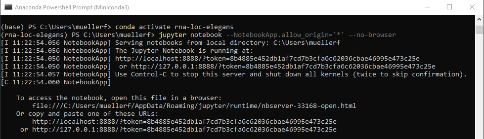

Tools¶
Here we describe the tools that are used in the different analysis workflows, and when necessary how to install them.
- RNA detection is performed with the Matlab package FISH-quant (more details below).
- Most postprocessing steps are performed with Python plugins running ImJoy. To use them, you have to install Python with Jupyter and the necessary ImJoy plugins. For more details see the respective sections below.
- Some annotation tasks are performed with Fiji, which you can download from here.
FISH-quant: RNA detection¶
FISH-quant is a Matlab toolbox to localize RNAs in 3D from smFISH images. FISH-quant is often used to perform the RNA detection. Eventually, we would like to implement the main FISH-quant features in ImJoy.

Python with Miniconda¶
We recommend installing an Miniconda distribution of Python: choose Python 3.7 and your operating system. You can then use the annoconda prompt to excecute the different commands listed below.
We recommend creating a dedicated environment to run code in this analysis package.
This guarantess that only necessary code is installed. Tos create an environment called rna-loc-elegans, open an anaconda prompt and type. Note that you will also install Jupyter, which will allow to run Python plugins in ImJoy.
Confirm with y when asked if you want to proceed (Proceed ([y]/n)?):
conda create --name rna-loc-elegans python=3.7 jupyter
ImJoy¶
ImJoy is image processing platform with an easy to use interface. ImJoy can be used directly in your browser, without any prior installation.
While ImJoy is an app running in the browser, NO user data will be transferred over the internet.
Some important features:
- Specific functionality is provided by plugins, which can be installed with simple links. Available plugins are listed in the plugin list on the left part of the interface. Depending on the implementation plugins are either executed directly by pressing on their name, or a simple interface can be displayed when pressing on the arrow down symbol.
-
ImJoy can have several workspaces. Each workspace can contain multiple plugins and is often dedicated to a specific data processing task. Workspaces can be selected from little puzzle symbol in the upper left part of the interface.

Installing plugins¶
We provide links to install ImJoy plugins for the different workflows. These installation links also specify in which ImJoy workspaces the plugin will be installed
If you press on the installation link, the ImJoy web app will open and display a
dialog asking if you want to install the specified plugin. To confirm, press
the install button.

Once installed, ImJoy remembers the workspaces and plugins and you simply have to
open the ImJoy app and select the workspace you want to use (which will be rna-loc-elegans)
https://imjoy.io/#/app

Running Python plugins¶
Most of the provided plugins use Python for the processing. In order for ImJoy these plugins, you have to connect ImJoy to a Jupyter notebook, which can be installed via Miniconda (see section about Python Installation above).
Once installed, you start an Jupyter Notebook via the anaconda terminal, to which ImJoy can connect. Please note that this notebooks runs on your local machine, so no data-transfer over the internet is taking place.

- Start an anaconda terminal.
- Activate the environment:
conda activate rna-loc-elegans - Start Jupyter notebook. Type
Copy the provided URL including the token, e.g. in the screenshot below:
jupyter notebook --NotebookApp.allow_origin='*' --no-browserhttp://127.0.0.1:8888/?token=8b4885e452db1af7cd7b3cfa6c62036cbae46995e473c25e -
To connect ImJoy to the notebook,
- go to the ImJoy app and press on the rocket symbol in the upper right corner,
select
Add Jupyter-Engineand paste the URL from the step above. - Plugins will then be automatically connected to this Jupyter Kernel. You can verify this, by clicking on the puzzle symbol next to the plugin name. Depending on the plugin, installation might take a while, during this period the plugin name will be in red.

- go to the ImJoy app and press on the rocket symbol in the upper right corner,
select